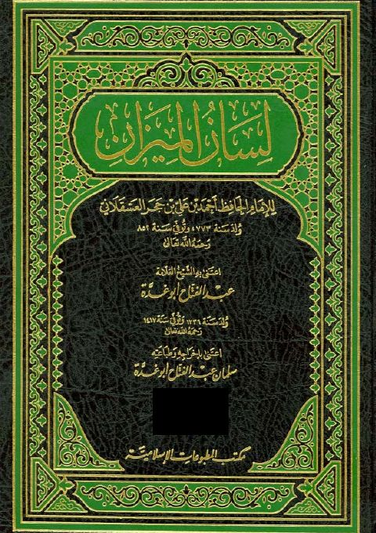

Downloads need an internet connection.
لسان الميزان
Authors: أحمد بن علي بن حجر العسقلاني
Editors: عبد الفتاح أبو غدة سلمان عبد الفتاح أبو غدة
Publishers: دار البشائر الإسلامية مكتب المطبوعات الإسلامية
**▫️ العنوان: لسان الميزان** ▪️ المؤلف: #أحمد_بن_محمد_بن_علي_بن_حجر_العسقلاني ▫️ المحقق: #عبد_الفتاح_أبو_غدة • #سلمان_عبد_الفتاح_أبو_غدة ▪️ الناشر: #دار_البشائر_الإسلامية • #مكتب_المطبوعات_الإسلامية ▫️ تاريخ النشر: 1423هـ 2002م ▪️ بلد النشر: بيروت، #لبنان ▫️ الطبعة: 1 ▪️ عدد الأجزاء: 10 ▫️ الصفحات: 6266 ▪️ نوع الوعاء: #كتاب ▫️ التصنيف الرئيسي: #التراجم_والأعلام ۪